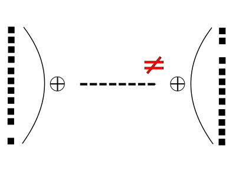

<!doctype html>
<html lang="en">
  <head>
    <meta charset="utf-8">

    <title>strfry: An efficient server for the Nostr protocol</title>

    <meta name="author" content="Doug Hoyte">

    <meta name="apple-mobile-web-app-capable" content="yes" />
    <meta name="apple-mobile-web-app-status-bar-style" content="black-translucent" />

    <meta name="viewport" content="width=device-width, initial-scale=1.0, maximum-scale=1.0, user-scalable=no, minimal-ui">

    <link rel="stylesheet" href="../reveal.js/css/reveal.css">
    <link rel="stylesheet" href="../reveal.js/css/theme/black.css" id="theme">

    <!-- Code syntax highlighting -->
    <link rel="stylesheet" href="../reveal.js/lib/css/zenburn.css">

    <!-- Printing and PDF exports -->
    <script>
      var link = document.createElement( 'link' );
      link.rel = 'stylesheet';
      link.type = 'text/css';
      link.href = window.location.search.match( /print-pdf/gi ) ? '../reveal.js/css/print/pdf.css' : '../reveal.js/css/print/paper.css';
      document.getElementsByTagName( 'head' )[0].appendChild( link );
    </script>

    <!--[if lt IE 9]>
    <script src="../reveal.js/lib/js/html5shiv.js"></script>
    <![endif]-->

    <style>
      .reveal .slides h1, .reveal .slides h2, .reveal .slides h3 {
        text-transform: none;
      }

      .container {
        display: flex;
      }

      .container > div {
        flex: 1;
      }

      .left {
        left:-8.33%;
        text-align: left;
        float: left;
        width:50%;
        z-index:-10;
      }

      .right {
        left:31.25%;
        top: 75px;
        text-align: left;
        float: right;
        z-index:-10;
        width:50%;
      }

      .small-text {
        font-size: 85%;
      }

      .reveal pre {
        width: unset;
      }

      .topic-slide {
      }
    </style>
  </head>

  <body>
    <div class="reveal">
      <div class="slides">

<!------------------------------------------------------->


<section data-markdown><script type="text/template">

## strfry

### An efficient server for the Nostr protocol


<div style="font-size: 150%; margin-bottom: 30px">Doug Hoyte</div>

<div>CppNorth 2023</div>

</script></section>


<!--
Nostr (Notes and Other Stuff Transmitted by Relays) is a simple, grass-roots protocol for publishing signed messages over websockets. It was created out of a desire to build Twitter and Reddit-like social networks with more client choice, data-portability, and not fully controlled by corporate entities. In January 2023 I published a C++ relay (server) named strfry, which has since been adopted by most of the high-traffic relays on the nostr network.

In this talk I'll discuss the strfry architecture and implementation, as well as general techniques and tricks for creating efficient servers for OLTP work-loads. Additionally, we'll describe "negentropy": strfry's range-based set-reconcilliation protocol that can synchronise large remote databases using a small amount of bandwidth. Other topics include spam fighting, DDoS protection, geo-replication, dictionary-based record compression, zero-downtime upgrades, low-level virtual memory tuning with the Linux kernel, and generating HTML with C++.
-->


<section data-markdown><script type="text/template">

## nostr

* Notes and Other Stuff Transmitted by Relays
* Simple JSON message format, cryptographically signed
  * No blockchains or cryptocurrency
* Relays are websocket servers where clients post their notes and read other people's notes
  * Clients typically use many relays for redundancy

</script></section>


<section data-markdown><script type="text/template">

## nostr events

    {
      "id": <sha256 of the serialized event data>,
      "pubkey": <public key of the event creator>,
      "created_at": <unix timestamp in seconds>,
      "kind": <integer>,
      "tags": [
        ["e", <id of another event>, <recommended relay URL>],
        ["p", <pubkey>, <recommended relay URL>],
        ... // other kinds of tags may be included later
      ],
      "content": <arbitrary string>,
      "sig": <signature of the id, by pubkey>
    }

</script></section>


<section data-markdown><script type="text/template">

## Posting a nostr event

* Connect to a relay's websocket, and send an `EVENT` message:

      ["EVENT",{"id"...}]

* Relay will reply with something like:

      ["OK","b1a649eb...",true,""]

  * ID, whether event was accepted, error message

</script></section>


<section data-markdown><script type="text/template">

## Downloading events

* Nostr relays index events so that the subset of events a client is interested in can be retrieved efficiently:
* To download events, send a `REQ` message:
      ["REQ","a",<filters>]
  * `"a"` is a client-chosen subscription ID

</script></section>


<section data-markdown><script type="text/template">

## Filters

  * All events by a pubkey, sorted descending by creation timestamp:
        {"authors":["2c41bc21..."]}
  * Events by either one of these pubkeys (OR):
        {"authors":["2c41bc21...","92ab1de3..."]}
  * All fields of filter must have a match (AND):
        {"authors":["2c41bc21..."],"kinds":[0,3],"since":1689178708}

</script></section>


<section data-markdown><script type="text/template">

## Responses

* `REQ`s are replied to 2 phases:
  * First: Relay sends events that were previously stored
  * Second: New events that come in are streamed to the client


      ["EVENT","a",{"id":...}] # stored events...
      ["EVENT","a",{"id":...}]
      ["EOSE","a"]             # End Of Stored Events
      ["EVENT","a",{"id":...}] # newly streamed event

</script></section>


<section data-markdown><script type="text/template">

## That's it. (pretty much)

* You now know the full nostr protocol
* NIPs: Nostr Implementation Possibilities
  * Optional extensions and suggestions on how to use nostr

</script></section>


<section data-markdown><script type="text/template">

## Choice of database

* Very significant design decision for a relay
* Influences the design in many ways

</script></section>


<section data-markdown><script type="text/template">

## SQL DBs

* Before strfry, most relays used relational SQL DBs
* Client filters are translated into SQL for execution:


    {"authors":["2c41bc21..."],"kinds":[0,3],"since":1689178708}

Becomes:

    SELECT * FROM Events WHERE
      pubkey = ? AND (kind = ? OR kind = ?) AND created_at >= ?
      ORDER BY created_at DESC

</script></section>


<section data-markdown><script type="text/template">

## Pros/Cons of SQL DBs

* Good:
  * Flexible: easy to iterate on different queries
  * Well-tuned query planners available by default
* Bad:
  * Lots of overhead (create SQL string, send to DB, parse SQL, create query plan)
  * Limited control over execution

</script></section>


<section data-markdown><script type="text/template">

## LMDB

* Instead of a SQL DB, strfry uses LMDB
* Embedded key-value database
* "Single-level store"
  * Uses the filesystem cache as its only memory cache
  * Works by `mmap()`ing a file

</script></section>


<section data-markdown><script type="text/template">

## LMDB benefits

* ACID transactions
* Doesn't need tuning or maintenance
* No locks in read path (MVCC)
  * Scales optimally with multiple processes/threads
* Instant crash recovery
  * No write-ahead log (less write amplification)
  * Instant start-up (even post-crash)

</script></section>


<section data-markdown><script type="text/template">

## MVCC

* Multi-Version Concurrency Control
* Read operations never need locking in LMDB
* Each transaction has a consistent view of the DB
  * Snapshot taken at transaction creation time
  * Different transactions can have different snapshots

</script></section>


<section data-markdown><script type="text/template">  </script></section>
<section data-markdown><script type="text/template">  </script></section>
<section data-markdown><script type="text/template">  </script></section>
<section data-markdown><script type="text/template">  </script></section>
<section data-markdown><script type="text/template">  </script></section>


<section data-markdown><script type="text/template">

## Record serialisation

* How should records be serialised in the DB?
* If something like JSON is used, must decode the JSON each time a record is accessed
  * Even if we only want one field
* Better option: flatbuffers
  * Single fields can be rapidly extracted, without decoding whole record
  * Zero-copy

</script></section>


<section data-markdown><script type="text/template">

## read() JSON file


</script></section>


<section data-markdown><script type="text/template">

## mmap() JSON file


</script></section>


<section data-markdown><script type="text/template">

## mmap() flatbuffers


</script></section>


<section data-markdown><script type="text/template">

## strfry threads

* "Shared-nothing" message-passing model
  * Threads primarily communicate via one-directional queues
  * Also indirectly communicate via the DB

</script></section>


<section data-markdown><script type="text/template">


</script></section>


<section data-markdown><script type="text/template">

## Websocket

* Accepts websocket connections
* Routes requests to Ingesters
* Sends replies back to connections
* Multiplexes many connections with epoll
* Only 1 websocket thread
  * Except with `REUSE_PORT`, discussed soon

</script></section>


<section data-markdown><script type="text/template">

## Ingester

* Does as much CPU-intensive work as possible
  * Decodes request JSON
  * Validates and hashes incoming events
  * Verifies event signatures
  * Pre-compiles `REQ` filters
* Routes message to next thread in pipeline

</script></section>


<section data-markdown><script type="text/template">

## Writer

* Performs operations that modify the DB
* Only 1 writer thread
* If multiple operations are queued up it executes them all in one transaction
  * Rolls back failed individual operations using sub-transactions
  * Transaction commit overhead is amortised, natural counterbalance when under load

</script></section>


<section data-markdown><script type="text/template">

## ReqWorker

* Retrieves stored events that match a `REQ`'s filter, and sends them back to client
* Can multiplex many concurrently running requests
* Will pause long-running DB queries to service new queries when they come in
* After sending all events, sends an `EOSE` and transfers the request to `ReqMonitor`

</script></section>


<section data-markdown><script type="text/template">

## ReqMonitor

* Maintains a set of live `REQ` subscriptions
  * Inverts the filters, so it has a list of all requests interested in a particular pubkey, for example
* Monitors DB for new events (using `inotify()`)
  * Events can be added in many ways, not just via the Writer thread

</script></section>


<section data-markdown><script type="text/template">

## Stream

* Connects to a remote relay, issues a `REQ` and saves the events into the local DB:
      strfry stream wss://some.relay.com --dir down
* Can also sent events saved into the local DB *to* the remote relay
  * Possible directions are `up`, `down`, or `both`

</script></section>


<section data-markdown><script type="text/template">

## Write Policy plugins

</script></section>


<section data-markdown><script type="text/template">


</script></section>


<section data-markdown><script type="text/template">

## Problem

* Clients often post to multiple relays and relays stream events up/down
* Often relay DBs have many common events
* How do you efficiently figure out which events one relay has the other doesn't, and vice versa?

</script></section>


<section data-markdown><script type="text/template">

## Set Reconcilliation

* You could send the full set of events, or just their IDs
  * Consumes too much bandwidth
* strfry uses range-based reconcilliation
  * Two sides alternate sending the XOR of the IDs within a particular range

</script></section>


<section data-markdown><script type="text/template"><h2>Round-trip 1a</h2>  </script></section>
<section data-markdown><script type="text/template"><h2>Round-trip 1b</h2>  </script></section>
<section data-markdown><script type="text/template"><h2>Round-trip 2a</h2>  </script></section>
<section data-markdown><script type="text/template"><h2>Round-trip 2b</h2>  </script></section>
<section data-markdown><script type="text/template"><h2>Round-trip 3a</h2>  </script></section>
<section data-markdown><script type="text/template"><h2>Round-trip 3b</h2>  </script></section>


<section data-markdown><script type="text/template">

## Optimisations

* Previous example was just for explanation
* Small ranges just have their list of IDs sent
* Ranges are split more aggressively, into 16 pieces, not 2

</script></section>


<section data-markdown><script type="text/template">

* If we were binary searching 1 million elements, we'd expect about 20 round-trips:
      log(1e6)/log(2) = 19.9316
* But when splitting into 16:
      log(1e6)/log(16) = 4.98289
* Because splitting happens in both directions:
      log(1e6)/log(16)/2 = 2.49145
* Syncing two DBs of 1 million elements that differ by 1 element takes 2 or 3 round-trips
  * About 900 bytes up and 600 bytes down

</script></section>


<section data-markdown><script type="text/template">

## Usage

* Single-header library:

      #include "Negentropy.h"

* Create `Negentropy` object, add your elements, and seal:

      Negentropy ne(16); // 16 is ID size

      for (const auto &item : myItems) {
          ne.addItem(item.timestamp(), item.id());
      }

      ne.seal();

</script></section>


<section data-markdown><script type="text/template">

## Client-side:

    std::string msg = ne.initiate();

    while (msg.size() != 0) {
        std::string response = queryServer(msg);
        std::vector<std::string> have, need;
        msg = ne.reconcile(response, have, need);
        // handle have/need
    }

## Server-side:

    while (1) {
        std::string msg = receiveMsgFromClient();
        std::string response = ne.reconcile(msg);
        respondToClient(response);
    }

</script></section>


<section data-markdown><script type="text/template">

## Thank You!

[github.com/hoytech/strfry](https://github.com/hoytech/strfry)

[hoytech.github.io/presentations/strfry](https://hoytech.github.io/presentations/strfry)

</script></section>


<!------------------------------------------------------->


      </div>

    </div>

    <script src="../reveal.js/lib/js/head.min.js"></script>
    <script src="../reveal.js/js/reveal.js"></script>

    <script>

      // Full list of configuration options available at:
      // https://github.com/hakimel/reveal.js#configuration
      Reveal.initialize({
        controls: true,
        progress: true,
        history: true,
        center: true,

        transition: 'none', // none/fade/slide/convex/concave/zoom

	math: {
          mathjax: '../lib/MathJax/MathJax.js',
          config: 'TeX-AMS_SVG-full',
	},

        // Optional reveal.js plugins
        dependencies: [
          { src: '../reveal.js/plugin/markdown/marked.js', condition: function() { return !!document.querySelector( '[data-markdown]' ); } },
          { src: '../reveal.js/plugin/markdown/markdown.js', condition: function() { return !!document.querySelector( '[data-markdown]' ); } },
          { src: '../reveal.js/plugin/highlight/highlight.js', async: true, callback: function() { hljs.initHighlightingOnLoad(); } },
          { src: '../reveal.js/plugin/math/math.js', async: true },
        ]
      });

    </script>

  </body>
</html>
